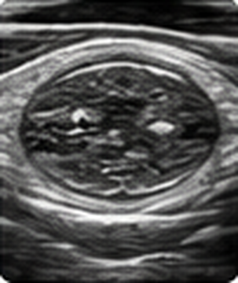
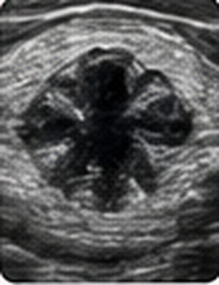

Tipos según su composición

Sólido
Compuesto por tejido tiroideo

Quístico
Contiene líquido

Mixto
Partes sólidas y quísticas
¿Cómo se ve uno sospechoso?
La ecografía tiroidea permite evaluar sus características.

MENOR SOSPECHA
- Quísticos puros
- Espongiformes
- Márgenes regulares
- Sin signos sospechosos

MAYOR SOSPECHA
- Muy hipoecoicos
- Márgenes irregulares
- Microcalcificaciones
- Más alto que ancho
- Se extiende fuera de la tiroides
SALUD EXPLICADA · NÓDULOS TIROIDEOS
3/7